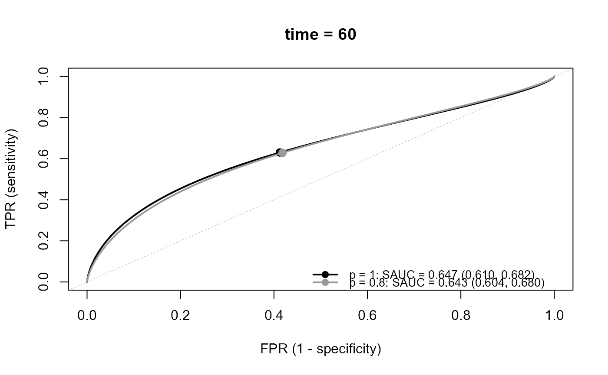
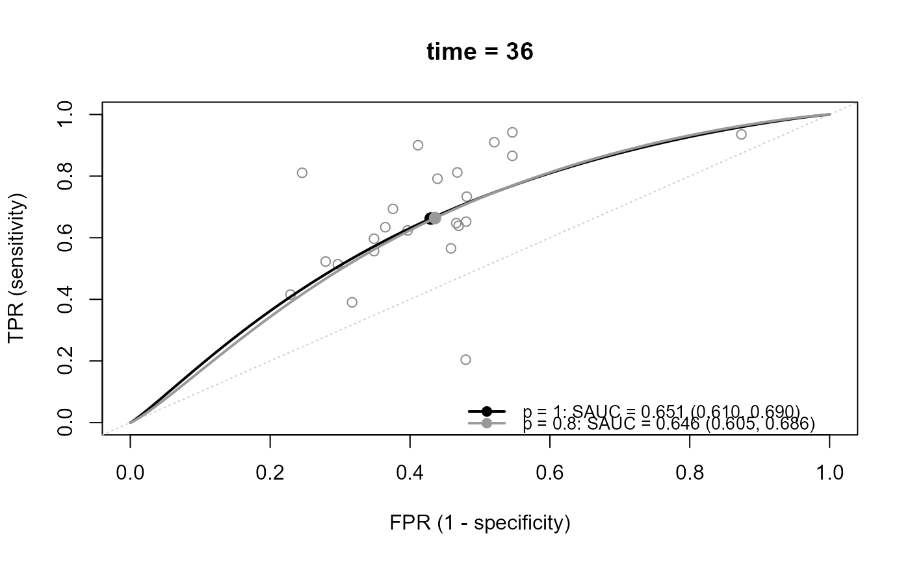
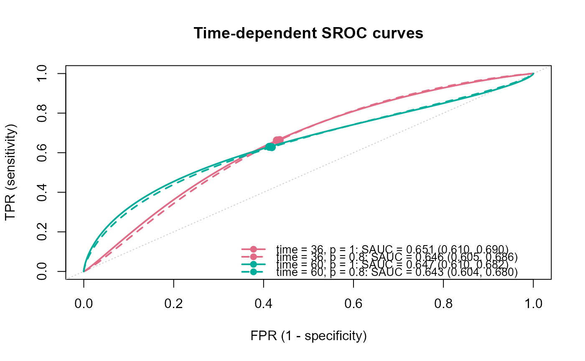

Sensitivity analysis for publication bias on the time-dependent SROC curve
Source:R/tsrocsa.lrt.R
tsrocsa.lrt.RdThis function conducts the likelihood-based sensitivity analysis for publication bias
on the time-dependent SROC curve and SAUC in meta-analysis of prognostic studies.
At each time point, the time-dependent sensitivity and specificity are reconstructed from the published
survival probabilities of the test-positive and test-negative groups (Combescure et al., 2016).
The logit-transformed sensitivity, specificity, and the log hazard ratio (lnHR) are modeled by
the trivariate random-effects model,
combined with a selection function on the \(t\)-statistic of lnHR.
The model is fitted for each time point in time.points and
each marginal selection probability \(p\) in senp.p.
Usage
tsrocsa.lrt(
time.points,
study.os,
time.os,
n1.os,
n0.os,
s1.os,
s0.os,
data.os,
study.lnhr,
lnhr,
var.lnHR,
data.lnhr,
time.med,
n1.med,
n0.med,
s1.med,
s0.med,
data.mt,
senp.p = 1,
ci.level = 0.95,
parallel.ncores = 1L,
parset = list()
)Arguments
- time.points
A numeric vector of the time points at which the time-dependent SROC curve is estimated. Each value should be included in
time.os.- study.os
Specify the column of the study ID (numeric) in
data.os.- time.os
Specify the column of the time at which the survival probabilities are reported. The unit of time should be the same as
time.pointsandtime.med.- n1.os
Specify the column of the number of subjects in the test-positive group (group 1).
- n0.os
Specify the column of the number of subjects in the test-negative group (group 0).
- s1.os
Specify the column of the survival probability at
time.osin group 1.- s0.os
Specify the column of the survival probability at
time.osin group 0.- data.os
A data frame of the survival data, with one row for each study and each time point. Within each study, the rows should be sorted in ascending order of time.
- study.lnhr
Specify the column of the study ID (numeric) in
data.lnhr, which corresponds tostudy.os.- lnhr
Specify the column of lnHR (group 1 versus group 0).
- var.lnHR
Specify the column of the variance of lnHR.
- data.lnhr
A data frame of lnHR, with one row for each study.
- time.med
Specify the column of the median follow-up time.
- n1.med
Specify the column of the number of subjects in group 1.
- n0.med
Specify the column of the number of subjects in group 0.
- s1.med
Specify the column of the survival probability at
time.medin group 1.- s0.med
Specify the column of the survival probability at
time.medin group 0.- data.mt
A data frame of the median follow-up time, with one row for each study reporting it. It is used to estimate the censoring distribution common to all the studies (see details).
- senp.p
A numeric vector of the marginal selection probabilities \(p = P(\mathrm{select})\), within (0, 1]. The model is fitted for each value. When \(p = 1\), the bivariate model of the logit-transformed sensitivity and specificity without selection is fitted (lnHR is not used). The default is 1.
- ci.level
The confidence level of the confidence intervals, within (0, 1). The default is 0.95.
- parallel.ncores
The number of cores used for the parallel computation over
time.points(PSOCK cluster of the package parallel). The default is1L(no parallel computation).- parset
A list of the settings for the estimation, which updates the default settings. Bad bounds may cause non-convergence.
mu.bound: \(\mu_1, \mu_2, \mu_3\) are searched within[-mu.bound, mu.bound]. The default is 5.tau.bound: The upper bound of \(\tau_1, \tau_2, \tau_3\). The default is 5.beta.interval: The lower and upper bounds of \(\beta\). The default isc(0, 5).alpha.bound: The root of \(\alpha\) is searched starting from the interval[-alpha.bound, alpha.bound], which is extended if necessary (seeuniroot). The default is 5.eps: The lower bound of \(\tau_1\) and \(\tau_2\) when \(p = 1\). The default is1e-5.
Value
An object of class "srocsa":
a list with one element for each time point (named by time.points),
each of which is a list with one element for each value of senp.p (named by senp.p).
For \(p = 1\), each element is the same as the output of reitsma.sroc.
For \(p < 1\), each element is the output of nlminb
(par is (mu1, mu2, mu3, tau1, tau2, tau3, rho1, rho2, rho3, beta);
rho1, rho2, and rho3 are the correlations of (1, 2), (2, 3), and (1, 3))
with the additional elements
sauc, beta, alpha, mu1.ci, mu2.ci, mu3.ci,
par.all, sauc.ci, and var.ml
(index 1: logit-sensitivity, 2: logit-specificity, 3: lnHR).
The list at each time point has the attribute "data": a data frame of the study-level
logit-transformed sensitivity (y1) and specificity (y2) and their variances
(v1, v2), used by plot.srocsa (add.study = TRUE).
The results can be shown by print.srocsa, summary.srocsa, and plot.srocsa.
Details
- Time-dependent sensitivity and specificity
At time \(t\), \(\mathrm{Se}(t) = (1 - S_1(t)) q_1 / ((1 - S_1(t)) q_1 + (1 - S_0(t)) q_0)\) and \(\mathrm{Sp}(t) = S_0(t) q_0 / (S_1(t) q_1 + S_0(t) q_0)\), where \(S_1(t)\) and \(S_0(t)\) are the survival probabilities of groups 1 and 0, and \(q_1 = n_1 / (n_1 + n_0)\) and \(q_0 = 1 - q_1\). Survival probabilities of 1 and 0 are replaced by \((n + 0.5) / (n + 1)\) and \(0.5 / (n + 1)\).
- Within-study variances and covariances
They are calculated from the survival probabilities up to \(t\), assuming the censoring distribution \(G(t) = \exp(-\eta t)\) common to all the studies. \(\eta\) is estimated within [0, 1] by least squares from
data.mt, such that the pooled survival probability at the median follow-up time multiplied by \(G\) is close to 0.5.- Selection function
The probability of publishing study \(i\) is modeled as \(\Phi(\alpha + \beta t_i)\), where \(t_i\) is lnHR divided by its standard error. For given \(p\) and the other parameters, \(\alpha\) is determined such that the mean of the inverse of the marginal selection probabilities of the observed studies equals \(1/p\).
- SAUC
The SROC curve and SAUC are calculated from the parameters of the logit-transformed sensitivity and specificity. See
sauc.
References
Combescure C, Daures JP, Foucher Y (2016). A literature-based approach to evaluate the predictive capacity of a marker using time-dependent summary receiver operating characteristics. Statistical Methods in Medical Research, 25(2), 674–685. doi:10.1177/0962280212464542
Examples
## load data
data(Ki67)
head(Ki67$OS)
#> author study t n1 n0 s1 s0
#> 1 bevilacqua 1 6 94 13 1.00 0.990
#> 2 bevilacqua 1 12 94 13 1.00 0.970
#> 3 bevilacqua 1 18 94 13 1.00 0.970
#> 4 bevilacqua 1 24 94 13 0.97 0.965
#> 5 bevilacqua 1 30 94 13 0.92 0.965
#> 6 bevilacqua 1 36 94 13 0.92 0.960
head(Ki67$HR)
#> author study HR ci.low ci.up
#> 1 bevilacqua 1 2.75 1.02 7.39
#> 2 caly 4 1.95 0.92 4.14
#> 3 domagala_no- 5 3.04 1.03 8.99
#> 4 domagala_no+ 6 1.38 0.66 2.86
#> 5 erdern 7 17.23 2.42 122.36
#> 6 fresno 8 1.81 0.71 4.59
head(Ki67$MT)
#> author study n1 n0 mct_mo s1_mct s0_mct
#> 1 bevilacqua 1 94 13 74.0 0.79 0.84
#> 2 erdern 7 13 34 72.5 0.60 0.97
#> 3 fresno 8 84 62 75.0 0.75 0.90
#> 4 goodson 11 56 56 61.2 0.75 0.90
#> 5 jansen 15 153 168 128.0 0.43 0.60
#> 6 jensen 16 54 64 104.0 0.68 0.90
## Define datasets of the HR
Ki67_OS <- Ki67$OS
Ki67_HR <- Ki67$HR
Ki67_MT <- Ki67$MT
## lnHR and its variance from HR and its 95 percent CI
Ki67_HR$lnHR <- log(Ki67_HR$HR)
Ki67_HR$lnHR.var <- ((log(Ki67_HR$ci.up) - log(Ki67_HR$ci.low)) / (2 * qnorm(0.975)))^2
fit <- tsrocsa.lrt(
time.points = c(36, 60),
study.os = study,
time.os = t, n1.os = n1, n0.os = n0,
s1.os = s1, s0.os = s0,
data.os = Ki67_OS,
study.lnhr = study, lnhr = lnHR, var.lnHR = lnHR.var,
data.lnhr = Ki67_HR,
time.med = mct_mo, n1.med = n1, n0.med = n0,
s1.med = s1_mct, s0.med = s0_mct,
data.mt = Ki67_MT,
senp.p = c(1, 0.8)
)
fit
#> ==================================================
#> Model optimization
#>
#> Number of studies : 23
#> time : 36
#> Optimizer : 1 1
#>
#> * 1 indicates converged
#> ==================================================
#>
#> SAUC Estimates
#> -------------------------------------------
#> Marginal p SAUC SE CI.low CI.up
#> -------------------------------------------
#> p = 1 0.651 0.020 0.610 0.690
#> p = 0.8 0.646 0.021 0.605 0.686
#>
#> ==================================================
#>
#> Parameter Estimates (SE)
#> -----------------------------------------------------------------------------------------------------------------------
#> Marginal p mu_se mu_sp tau_se tau_sp rho beta alpha
#> -----------------------------------------------------------------------------------------------------------------------
#> p = 1 0.673 (0.185) 0.284 (0.115) 0.656 (0.209) 0.512 (0.095) -0.877 (0.161) - -
#> p = 0.8 0.680 (0.192) 0.258 (0.117) 0.680 (0.214) 0.509 (0.096) -0.882 (0.155) 0.399 (0.369) 0.308 (-)
#>
#> ==================================================
#> Model optimization
#>
#> Number of studies : 21
#> time : 60
#> Optimizer : 1 1
#>
#> * 1 indicates converged
#> ==================================================
#>
#> SAUC Estimates
#> -------------------------------------------
#> Marginal p SAUC SE CI.low CI.up
#> -------------------------------------------
#> p = 1 0.647 0.018 0.610 0.682
#> p = 0.8 0.643 0.019 0.604 0.680
#>
#> ==================================================
#>
#> Parameter Estimates (SE)
#> -----------------------------------------------------------------------------------------------------------------------
#> Marginal p mu_se mu_sp tau_se tau_sp rho beta alpha
#> -----------------------------------------------------------------------------------------------------------------------
#> p = 1 0.532 (0.133) 0.353 (0.135) 0.430 (0.153) 0.577 (0.110) -0.928 (0.124) - -
#> p = 0.8 0.524 (0.138) 0.330 (0.138) 0.457 (0.154) 0.572 (0.110) -0.909 (0.126) 0.254 (0.544) 0.434 (-)
#>
##
print(fit)
#> ==================================================
#> Model optimization
#>
#> Number of studies : 23
#> time : 36
#> Optimizer : 1 1
#>
#> * 1 indicates converged
#> ==================================================
#>
#> SAUC Estimates
#> -------------------------------------------
#> Marginal p SAUC SE CI.low CI.up
#> -------------------------------------------
#> p = 1 0.651 0.020 0.610 0.690
#> p = 0.8 0.646 0.021 0.605 0.686
#>
#> ==================================================
#>
#> Parameter Estimates (SE)
#> -----------------------------------------------------------------------------------------------------------------------
#> Marginal p mu_se mu_sp tau_se tau_sp rho beta alpha
#> -----------------------------------------------------------------------------------------------------------------------
#> p = 1 0.673 (0.185) 0.284 (0.115) 0.656 (0.209) 0.512 (0.095) -0.877 (0.161) - -
#> p = 0.8 0.680 (0.192) 0.258 (0.117) 0.680 (0.214) 0.509 (0.096) -0.882 (0.155) 0.399 (0.369) 0.308 (-)
#>
#> ==================================================
#> Model optimization
#>
#> Number of studies : 21
#> time : 60
#> Optimizer : 1 1
#>
#> * 1 indicates converged
#> ==================================================
#>
#> SAUC Estimates
#> -------------------------------------------
#> Marginal p SAUC SE CI.low CI.up
#> -------------------------------------------
#> p = 1 0.647 0.018 0.610 0.682
#> p = 0.8 0.643 0.019 0.604 0.680
#>
#> ==================================================
#>
#> Parameter Estimates (SE)
#> -----------------------------------------------------------------------------------------------------------------------
#> Marginal p mu_se mu_sp tau_se tau_sp rho beta alpha
#> -----------------------------------------------------------------------------------------------------------------------
#> p = 1 0.532 (0.133) 0.353 (0.135) 0.430 (0.153) 0.577 (0.110) -0.928 (0.124) - -
#> p = 0.8 0.524 (0.138) 0.330 (0.138) 0.457 (0.154) 0.572 (0.110) -0.909 (0.126) 0.254 (0.544) 0.434 (-)
#>
summary(fit)
#> ==================================================
#> Model optimization
#>
#> Number of studies : 23
#> time : 36
#> Optimizer : 1 1
#>
#> * 1 indicates converged
#> ==================================================
#>
#> SAUC Estimates
#> -------------------------------------------
#> Marginal p SAUC SE CI.low CI.up
#> -------------------------------------------
#> p = 1 0.651 0.020 0.610 0.690
#> p = 0.8 0.646 0.021 0.605 0.686
#>
#> ==================================================
#>
#> Parameter Estimates (SE)
#> -----------------------------------------------------------------------------------------------------------------------
#> Marginal p mu_se mu_sp tau_se tau_sp rho beta alpha
#> -----------------------------------------------------------------------------------------------------------------------
#> p = 1 0.673 (0.185) 0.284 (0.115) 0.656 (0.209) 0.512 (0.095) -0.877 (0.161) - -
#> p = 0.8 0.680 (0.192) 0.258 (0.117) 0.680 (0.214) 0.509 (0.096) -0.882 (0.155) 0.399 (0.369) 0.308 (-)
#>
#> ==================================================
#> Model optimization
#>
#> Number of studies : 21
#> time : 60
#> Optimizer : 1 1
#>
#> * 1 indicates converged
#> ==================================================
#>
#> SAUC Estimates
#> -------------------------------------------
#> Marginal p SAUC SE CI.low CI.up
#> -------------------------------------------
#> p = 1 0.647 0.018 0.610 0.682
#> p = 0.8 0.643 0.019 0.604 0.680
#>
#> ==================================================
#>
#> Parameter Estimates (SE)
#> -----------------------------------------------------------------------------------------------------------------------
#> Marginal p mu_se mu_sp tau_se tau_sp rho beta alpha
#> -----------------------------------------------------------------------------------------------------------------------
#> p = 1 0.532 (0.133) 0.353 (0.135) 0.430 (0.153) 0.577 (0.110) -0.928 (0.124) - -
#> p = 0.8 0.524 (0.138) 0.330 (0.138) 0.457 (0.154) 0.572 (0.110) -0.909 (0.126) 0.254 (0.544) 0.434 (-)
#>
#> ==================================================
#> All elements of the fitted models
#> ==================================================
#>
#> --------------------------------------------------
#> time = 36, p = 1
#> --------------------------------------------------
#> mu1 mu2 tau1^2 tau2^2 tau12 sauc sens
#> 0.673 0.284 0.430 0.262 -0.295 0.651 0.662
#> spec
#> 0.570
#>
#> --------------------------------------------------
#> time = 36, p = 0.8
#> --------------------------------------------------
#> mu1 mu2 mu3 tau1^2 tau2^2 tau3^2 tau12
#> 0.680 0.258 0.614 0.462 0.259 0.165 -0.305
#> tau23 tau13 beta alpha sauc sens spec
#> 0.079 -0.005 0.399 0.308 0.646 0.664 0.564
#> hr
#> 1.295
#>
#> --------------------------------------------------
#> time = 60, p = 1
#> --------------------------------------------------
#> mu1 mu2 tau1^2 tau2^2 tau12 sauc sens
#> 0.532 0.353 0.185 0.333 -0.230 0.647 0.630
#> spec
#> 0.587
#>
#> --------------------------------------------------
#> time = 60, p = 0.8
#> --------------------------------------------------
#> mu1 mu2 mu3 tau1^2 tau2^2 tau3^2 tau12
#> 0.524 0.330 0.617 0.209 0.327 0.126 -0.237
#> tau23 tau13 beta alpha sauc sens spec
#> 0.068 0.036 0.254 0.434 0.643 0.628 0.582
#> hr
#> 1.391
#>
## plots
plot(fit, ask = FALSE) # all time points, one per page, no prompt

plot(fit, time = 36, add.study = TRUE) # one time point with the studies

plot(fit, overlay = TRUE) # all time points in one panel

# \donttest{
## interactive: press <Return> to move to the next time point
if (interactive()) plot(fit, add.study = TRUE, study.size = "precision")
# }